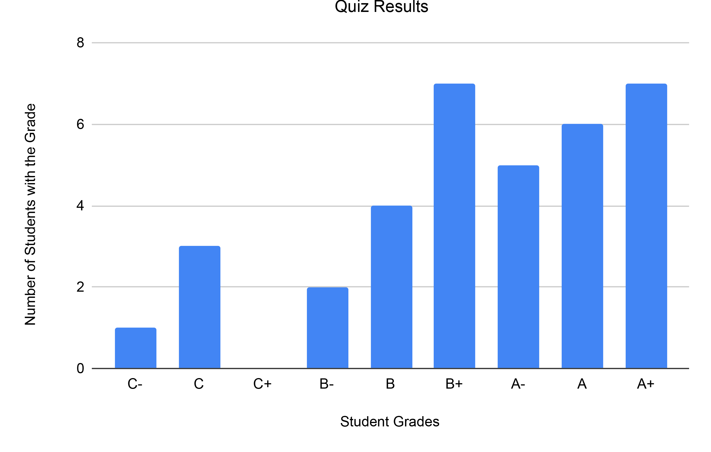

Problem
The grade 3 and 4 students in Spruce Glen Public School had to write a quiz. The bar chart below shows the results of the quiz. Reading the grades from left to right in the bar chart, we see the grades from lowest to highest. In other words, C- is the lowest grade and A+ is the highest grade.

How many students wrote the quiz?
What is the median of all the grades on this quiz? The median is the middle value of the data when arranged in order.
Solution
From the bar chart, we can calculate the total number of students by adding up the number of quizzes with each grade:
\[1 + 3 + 0 + 2 + 4 + 7 + 5 + 6 + 7 = 35\]
So a total of 35 students wrote the quiz.
To find the median grade, we could list all of the grades in sorted order and look for the middle value in that list. Another way would be to discard matching numbers of grades from each end of the chart. You could do this by marking matching Xs on the bars of the graph, working from the outside toward the middle. Each X on a bar represents one student’s grade.
In this case, we see that there are 7 students with A+ grades and a total of 6 students with grades of C- (1), C (3), and B- (2). That leaves 1 grade of A+ unaccounted for at this point.
Now we notice that there are a total of 11 students with grades of B (4) and B+ (7). From the right side of the chart, that could match up with 1 student with a grade of A+, 6 students with a grade of A, and 4 students with a grade of A-. Since the only grade left unaccounted for at this point is from a student with a grade of A-, this means the median grade is A-.
Teacher’s Notes
The diagram in the problem was generated using a spreadsheet. Another activity would be to have the students recreate the chart in a spreadsheet themselves.
Here is the source data used to create the chart:
The starting point for this chart was created by highlighting the cells from A1 to B10, and then choosing to create a bar chart. Then we needed to do some additional formatting to add the grid lines and \(y\)-axis title that appear in the version you see in this problem’s description.
Note that the row showing the total is not included when generating the chart itself. The value in cell B11 was calculated using a formula: =SUM(B2:B10).